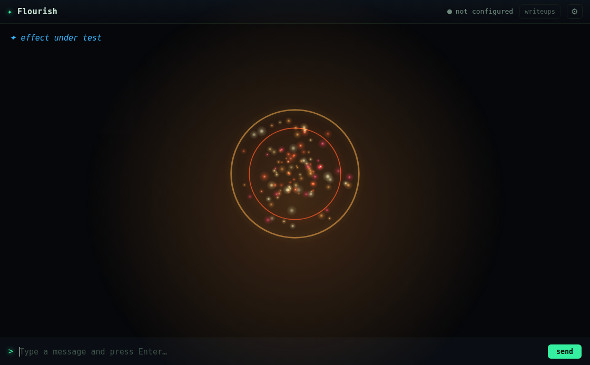
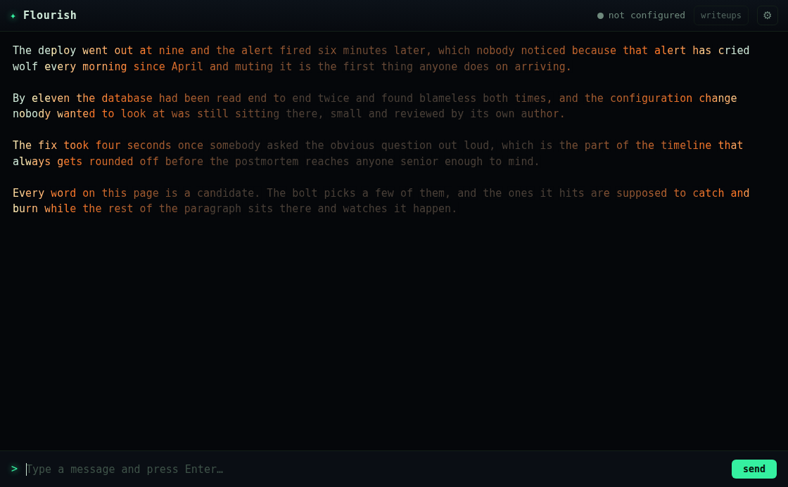
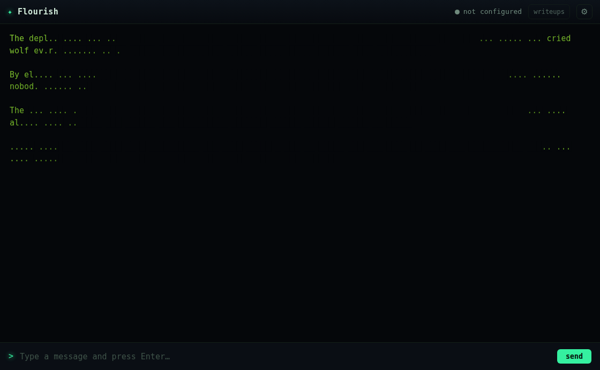
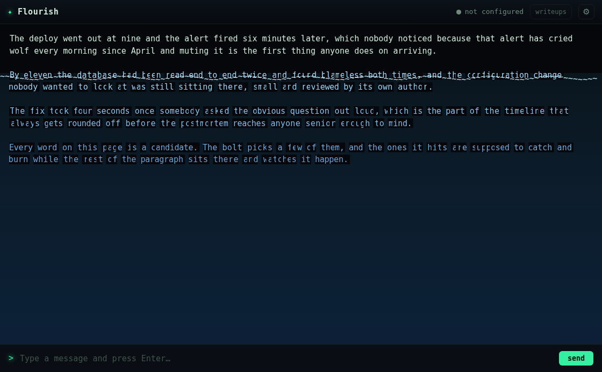
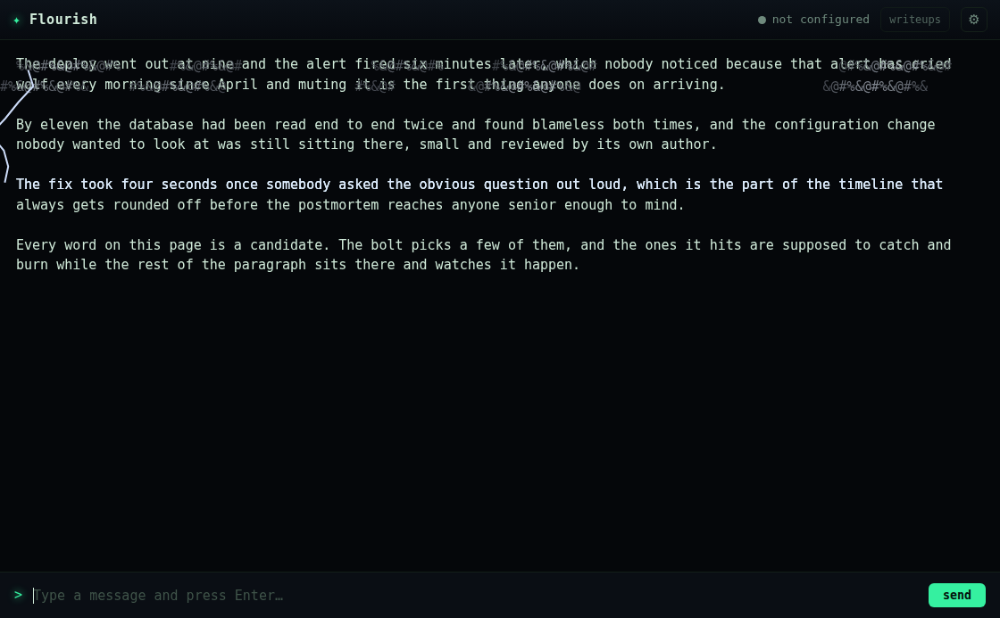
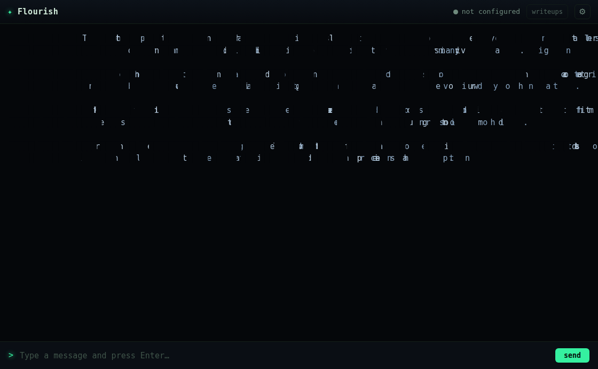

"add 30 more effects, should be element themed, include firebomb, napalm, blizzard, electricity, smoke, etc… half of them should be [grid] based."
Fifteen particle effects on the canvas engine, and fifteen grid effects that transmute the on-screen prose — the elements, done both ways.
Random bursts on the existing particle system (like spark/nova), so no seeded planner — the variety
is in the physics. Colours are hex, because every particle goes through glowSprite which
parses hex; an hsl() string there draws nothing.
firebomb | fireball: flash + blast rings + rising embers | napalm | sticky fire on arcs that fall and cling |
blizzard | driving snow across the screen | electricity | branching arcs crackling from a point |
smoke | grey plumes billowing up | lava | molten globs bubbling and falling |
hail | hard ice pellets hammering down | steam | fine vapour hissing upward |
acid | corrosive droplets spitting and sizzling | sandstorm | a wall of dust driving across |
cinders | glowing cinders drifting DOWN (embers rise) | shockwave | concentric pressure rings |
whirlwind | a flat swirl of debris (polar mode) | geyser | a jet of water erupting and arcing back |
venom | a toxic cloud that SINKS and pools |
These transmute the text in place. The shared machinery is a spreading front
(_frontScene / _drawFront): every occupied cell gets an arrival time from a
distance function — radial from the caret, inward from the edges, directional, a rising waterline — and
once the front reaches a cell the draw transforms it, recolouring the real character, swapping its glyph,
or eating it into a hole. Nine effects use it; six have bespoke mechanics (an arc that walks
character-to-character, a rising waterline, a smoke bank, a sideways gust, a strike-throwing cloud, a
burying dune). All of it is canvas over untouched DOM, so the prose is whole when it fades.
ignite | fire spreads from the caret; characters char to ash | frostbite | frost creeps in from the edges to ice-blue |
corrode | acid pits the letters into dots, then holes | electrify | an arc random-walks letter to letter, flaring each |
overgrow | green vines climb the lines, sprouting between words | rust | the text oxidises across, orange-brown, flaking |
flood | a waterline rises; covered prose goes wavy blue | petrify | the text turns to grey stone from a point |
smokescreen | smoke wells up and thins the text out | glaciate | an ice sheet slides across, freezing letters |
magma | molten heat spreads and cools to black basalt | windshear | a gust blows the characters sideways, then home |
thunderhead | a storm cloud forms and strikes down into the lines | sandbury | a dune rises and buries the text under sand |
spores | toxic spores bloom off the letters and drift |

firebomb — flash, two blast rings, a core of fire and rising embers.
ignite — the fire front sweeping out from the caret, the prose charring orange to ash.
corrode — the acid has eaten the letters into dots and holes.
flood — a waterline with a ~ surface; the prose below it wavy and blue.
thunderhead — a cloud band across the top and a bolt striking down into the lines.
windshear — the characters blown sideways off their lines by the gust.Plan-pure / probe-paint / look-anyway, as ever. 220 unit tests (every elemental planner sane at seven
seeds; every grid effect wired to a reachable planner). ascii-probe extended with a
faithfulness oracle for the transmuting effects — "did the front transform a real swathe of prose this
frame" — and a motion exemption for windshear (it blows characters off the edge on purpose):
verdict 40/40 planned / painted / faithful / reaped
(full output). Then a representative sample read as screenshots.
Two defects, both surfaced by the probe:
rows array, which collides
with the banner's string rows in the probe's reveal-timing oracle
(S.rows[0].length → NaN → it sampled at t=0, so the end-of-life wait fired before the scene
actually ended). The exact same number-vs-array field collision that bit life and
invaders in volume II. Renamed the field to rowKeys. Three times now —
a shared field name across effects is a standing trap; the lesson is to name grid-dimension fields
distinctly (lcols/rowKeys) so a number can never sit where an array is
expected.